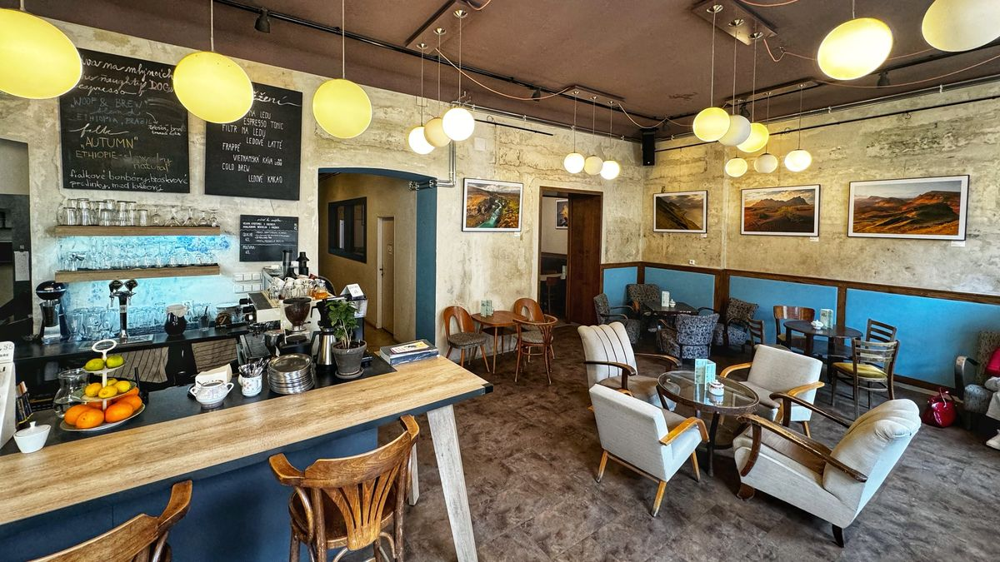

O nás
Kavárna Zrnko vznikla v roce 2019 z jednoduchého nápadu: dát lidem místo, kde se mohou na chvíli zastavit. Najdete nás v klidné uličce kousek od náměstí, kde se u nás potkávají studenti, sousedé i lidé na cestě do práce.
Všechno u nás děláme poctivě a v malém. Pečeme vlastní zákusky, vaříme domácí limonády a každý den vás obsloužíme s úsměvem.